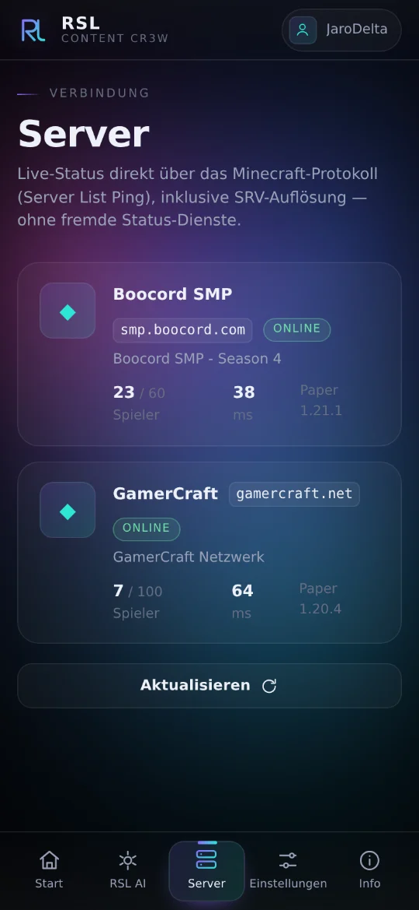
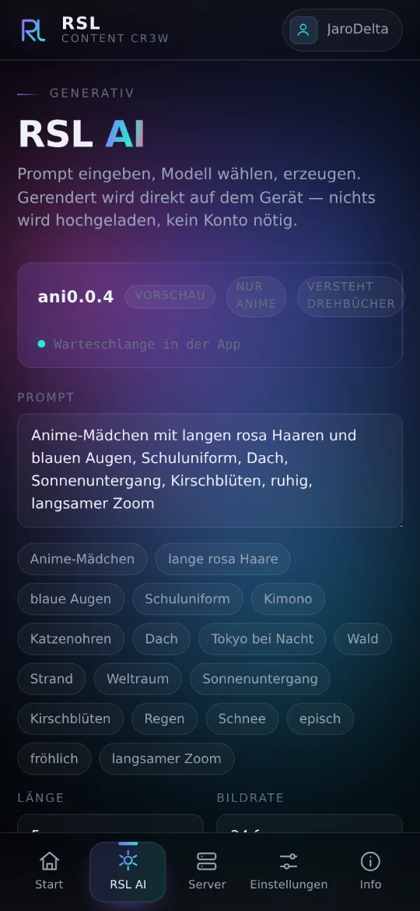

RSL
Redstone Labs · Content Cr3w
Server
Sind sie online?
Live-Status direkt über das Minecraft-Protokoll. Kein fremder Dienst dazwischen.

RSL AI
Ein Satz. Ein Clip.
Gerechnet wird auf deinem Gerät. Nichts wird hochgeladen.

Konto
Minecraft dabei?
Mit dem Microsoft-Konto anmelden – Name, UUID und Skin inklusive.
RSL
Jetzt kostenlos laden
thejjbcraft.github.io/RSL/apps/store/
Android 7.0+ · unter 400 KB · keine Werbung